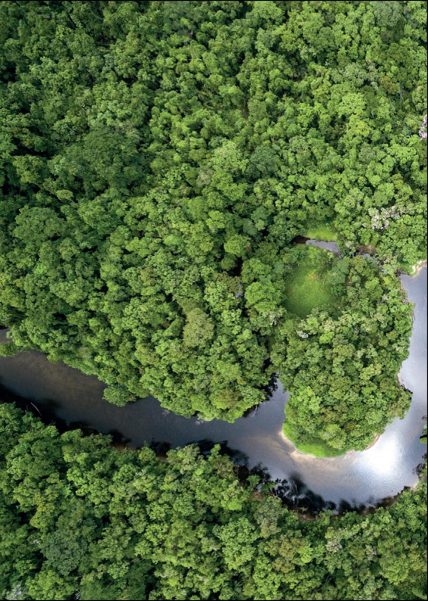

Sunday
12
July
Day 03
Into the rainforest
São Paulo → Alta Floresta → Cristalino- 9:30 AM — Pick-up from the Renaissance lobby — private transfer to Viracopos airport (~1.5 hrs)
- Fly to Alta Floresta, gateway to the southern Amazon
- 45 minutes by road, then 30 minutes by boat up the Cristalino River as the sun drops — the lodge is reachable only by water
Azul AD4216VCP 2:10 PM → AFL 4:00 PMSeats 3A–D · 23kg checked + 10kg carry-on
💧 FUN FACT — The Cristalino is a rare clear-water river. Unlike the silty brown Amazon mainstem, it runs glassy and dark — which is why the wildlife viewing (and the swimming) is so good. No cell service for 3 days. You're welcome.
🌙
Dinner
First dinner at Cristalino Jungle Lodge to a soundtrack of night frogs and howler monkeys.
Monday
13
July
Day 04
Canopy towers & piranhas
Cristalino Jungle Lodge- Dawn at the canopy tower — 50 metres above the forest floor as macaws and toucans commute past at eye level
- Two guided excursions daily (max 8 per guide): canoeing, rainforest trails, piranha fishing, wildlife boat safaris
- On the watch list: five species of monkey, giant otters, tapirs — and the electric-blue flash of morpho butterflies
- Camera day one: Evan & Zach on the long lenses (Tamron 50-400 & 150-500), Ian spotting
🍛
Dinner
At the lodge — regional Amazonian cuisine, fresh river fish and tropical fruit we can't pronounce yet.
🦋 FUN FACT — The blue morpho's wings aren't actually blue: microscopic scales bend the light. And piranha means "tooth fish" in Tupi — there are ~60 species, and yes, we're fishing for them before we swim.
Tuesday
14
July
Day 05
Amazon grand finale
Cristalino Jungle Lodge- Morning & afternoon excursions — deeper trails, secret river bends, monkeys overhead
- Private sunset boat tour 🥂 — a swim in the Cristalino, riverside picnic and sparkling wine as the forest turns gold (our Jacada treat)
✨
Dinner
Farewell dinner at the lodge — one last night under the Amazon stars.

Wednesday
15
July
Day 06
Across Brazil in a day
Cristalino → Cuiabá → São Paulo- One last dawn chorus, then boat + road back to Alta Floresta
- Two Azul hops: Cuiabá, then on to Viracopos/Campinas
- Overnight at the Marriott Airport Hotel São Paulo — hot showers and real Wi-Fi again
Azul AD2633AFL 1:00 PM → CGB 2:05 PMSeats 2A–D
Azul AD4339CGB 4:40 PM → VCP 7:45 PM23kg checked + 10kg carry-on
🛎️
Dinner
Easy dinner at the hotel — early night before the Pantanal.